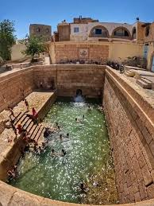

Piscines romaines
Situées au cœur de la ville, les piscines romaines de Gafsa sont alimentées par des sources thermales naturelles. Construites durant l'époque romaine, elles sont toujours utilisées aujourd'hui et constituent un lieu de baignade unique chargé d'histoire.